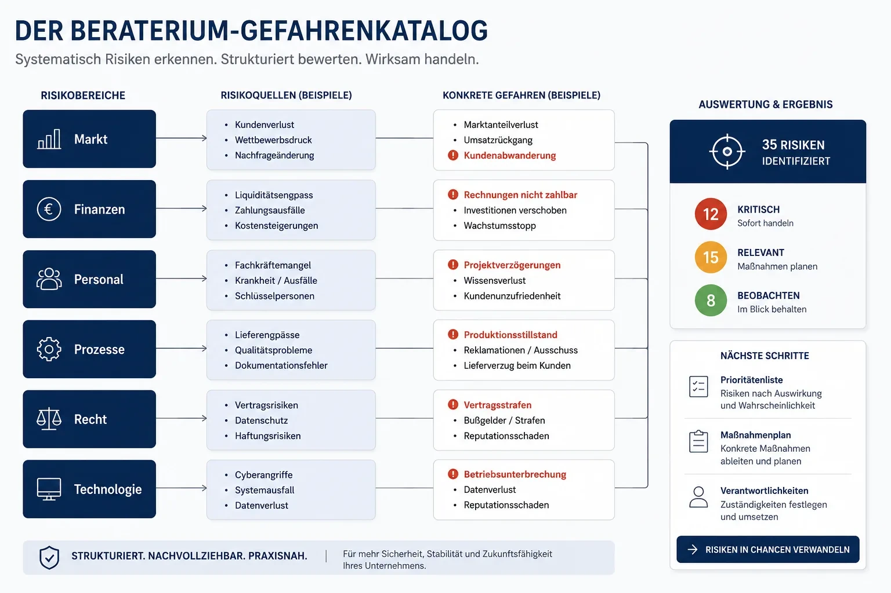

HOW WE WORK
From gut feeling to clarity – in clear steps
Our method deliberately separates three questions: What happens in the worst case? How often does that happen? And what have you already done about it today? Step by step, a clear picture emerges.
What is the hazard catalog – and why 3 levels?
The hazard catalog first collects neutrally and completely what can harm a business – without judging how likely or severe something is. To keep the number of possible hazards manageable, the catalog is limited to three clear levels.
We deliberately work with hazards because they form a neutral starting point. Only in the second step do they become risks – when we assess how relevant a hazard is for your business.

How do we assess how big a risk really is?
We move from gut feeling to a concrete scenario. Instead of asking ‘How likely is that?’, we say: ‘Imagine it has already happened.’ Then we estimate what that event means for your business – and translate the damage into euros.
Example
Hazard: Loss of the business owner (key person). Guiding question: What happens if you cannot work tomorrow? Scenario: Absence for 4 weeks. → On that basis, the extent of damage is estimated in euros.
“Direction over absolute precision.”
A good estimate beats a perfect calculation that never gets done.
Do we count what you already do?
Yes. Alongside damage, we assess likelihood – in understandable timeframes such as weeks, months or years. And we factor in your ‘inventory’: existing measures that already reduce the risk today.
For example, cover that can take on around 50 % at short notice. The damage would be higher in principle – but measures like this reduce it significantly.
Why do several people assess instead of one?
Because multiple perspectives lead to a more realistic assessment than a single opinion. In a business, that ideally happens with different managers and team members – with people at the centre, not the system.
What if I work alone?
For solo self-employed people and micro-businesses, we deliberately replace the missing team: two facilitators who structure and challenge, plus an AI sparring partner for statistical estimates and experience-based input.
What happens after the analysis?
The analysis creates clarity – the real value comes in implementation. Three paths are open. You choose which one. Beraterium stays your single point of contact.
Implement yourself
With your own team. Suited to organisational or simple measures and existing capability.
With your suppliers
Continue with trusted partners. Suited to established relationships and structures.
We coordinate
One fixed contact, one face to the customer. We bring the right people together and make sure measures fit together.
“Not analysis to file away – solutions to act on.”
How do we choose which measures actually help?
We tackle the biggest risks first. Each measure has one purpose: reduce damage and/or reduce likelihood.
“We look for not the most measures – but the right ones.”
Which methods and processes does Beraterium use?
Our risk management process follows three clear phases: collect hazards, assess risks in euros, prioritise measures. No corporate framework — but a repeatable flow that SMEs, startups, and solo operators complete in 2–6 weeks.
The methods are deliberately lean: structured workshops, guiding questions instead of spreadsheet monsters, assessment through multiple perspectives. The result is a risk picture you can act on — not a folder for the drawer.
ISO 31000 and the Beraterium method
ISO 31000 describes the framework for risk management — context, identification, analysis, treatment. Beraterium is not an ISO certifier, but follows the same principles: collect systematically, assess transparently, prioritise measures by impact.
The difference: we translate the standard into euros, timeframes, and concrete steps for businesses without their own risk office — understandable, practical, without bureaucracy.
Risks and opportunities in the matrix
Classic risk-opportunity matrices sort by likelihood and impact — often as traffic lights. Beraterium replaces colours with euros: damage × likelihood, minus existing measures. You immediately see which three risks would really become expensive.
We do not treat opportunities as the opposite pole, but as measures with a positive effect — for example diversification that reduces concentration risk. Prioritisation stays the same: biggest lever first.
Matching services by audience
The method is the same everywhere — scope adapts to your situation:
- Risk management for SMEs → — 6-week roadmap for mid-market businesses
- Risk management for startups → — 4-week check, investor-ready
- Risk management for solo self-employed → — 2-week compass with AI sparring partner
Frequently asked questions about the method
What is a hazard catalog in risk management?
A hazard catalog is a structured, judgment-free list of everything that could harm a business. Beraterium's 3-level hazard catalog keeps the number manageable. Only when the catalog is complete does assessment begin.
What is the difference between a hazard and a risk?
A hazard is anything that can cause harm – collected neutrally. It becomes a risk only when we assess how likely it is and what financial damage it would cause in euros.
Why does Beraterium assess risks in euros instead of traffic-light colours?
Traffic-light colours are subjective. Damage in euros is concrete, negotiable, and enables objective prioritisation — biggest damage first, regardless of gut feeling or hierarchy.
What is a risk management process and how does Beraterium's work?
Three phases: (1) collect hazards in the 3-level catalog, (2) assess risks — damage in euros × likelihood, minus existing measures, (3) implement the few measures with the greatest impact.
How long does a risk analysis take?
Depending on audience, typically 2 weeks (solo) to 6 weeks (SME). We agree the exact timeline at kick-off.
Do I need prior knowledge or preparation?
No. You bring your knowledge of your business – we bring the structure and the method.
What if I work alone?
Two facilitators and an AI sparring partner replace the missing team so the assessment stays balanced.
Do you implement the measures too?
You choose the path: yourself, with your own suppliers, or through our coordination via the Risk Radar network. Beraterium stays your single point of contact.
Make your risks visible now
In a free intro call, we show you what the method looks like for your business.
Book a free intro call